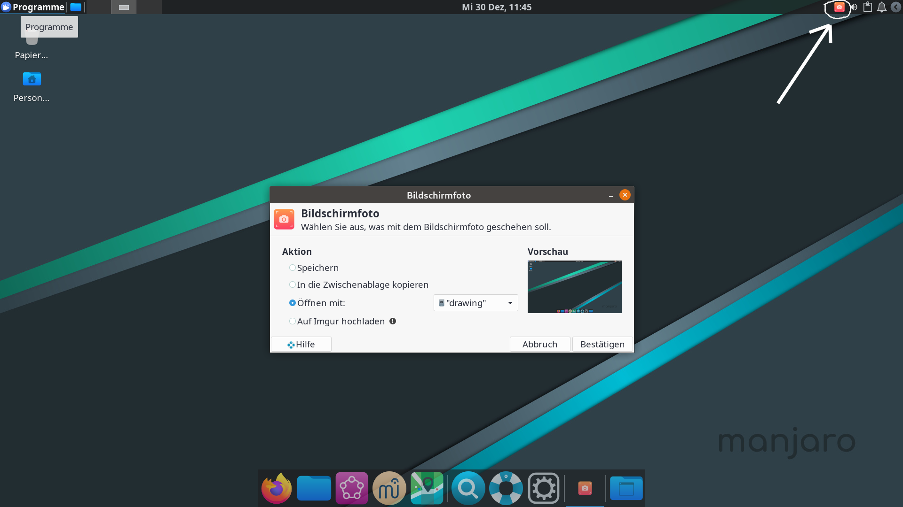

Hier sind einige nützliche Tipps
Bildschirmfoto aufnehmen
Manchmal möchte man die gerade angezeigten Informationen speichern. Dazu kann man ein Bildschirmfoto erstellen. Oben rechts auf der Leiste findest du das Symbol mit der Kamera. Wenn du da drauf klickst, öffnet sich ein Menü zum erstellen von Bildschirmfotos.
Effektiver arbeiten mit Tastaturkürzeln
- Du kennst schon die Tastaturkürzel für einige Programme aus dem Artikel "Suchen und Zurechtfinden"
- Einige weitere nützliche Kombinationen sind:
- Strg+Q beendet in meisten Fällen das Programm
- Super+Pfeil nach oben macht das aktuelle Fenster zum Vollbild
- Strg+C kopiert den markierten Text
- Strg+X schneidet den markierten Text aus
- Strg+V fügt den kopierten Text wieder ein
- ⇒ du kannst auch die Verwaltung der Zwischenablage nutzen, wenn du mehrmals Text kopierst. (Diese ist oben rechts auf der Leiste)